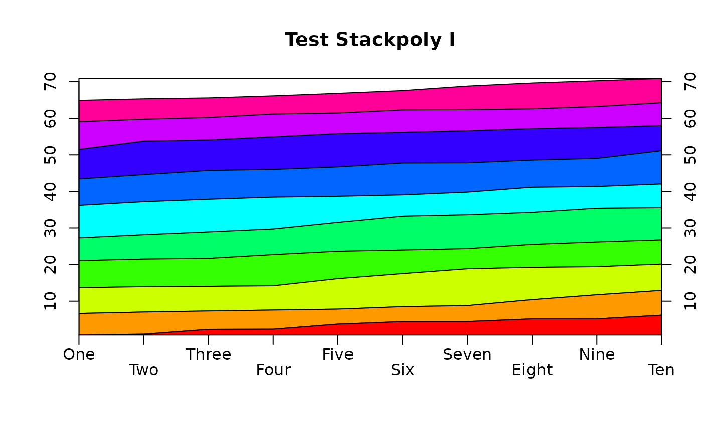
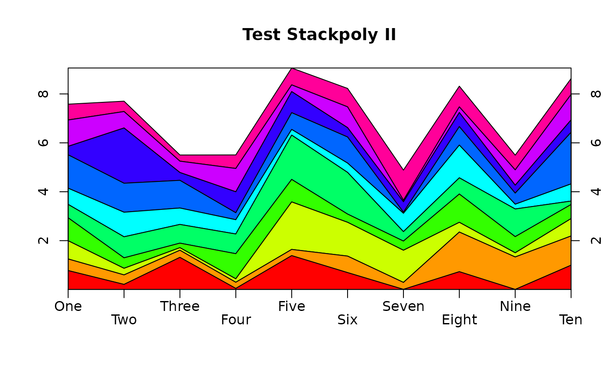
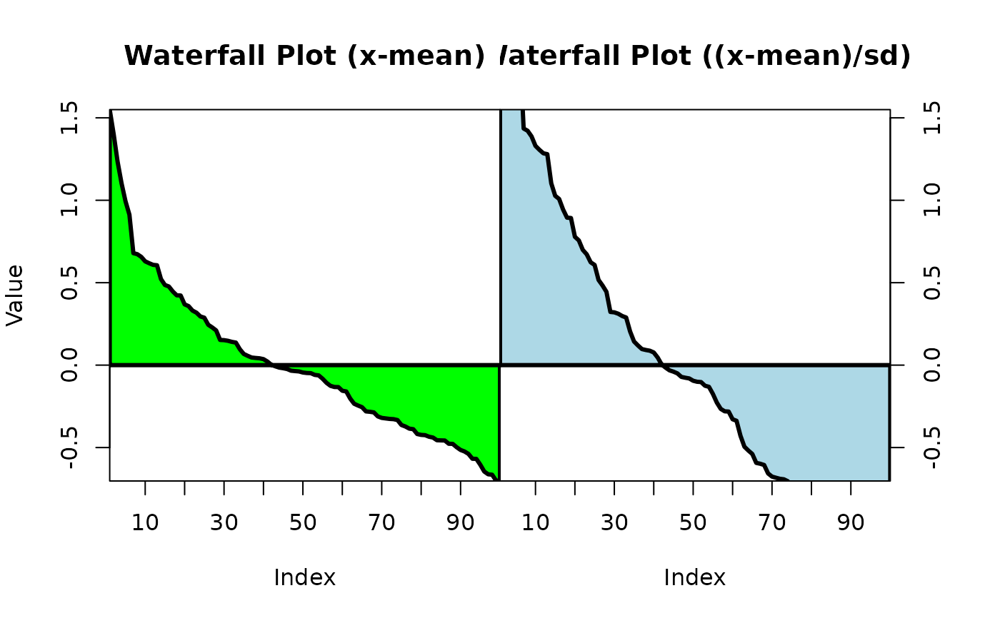

Display the columns of a matrix or data frame as stacked polygons
stackpoly.RdPlot one or more columns of numeric values as the top edges of polygons instead of lines.
Usage
stackpoly(x,y=NULL,main="",xlab="",ylab="",xat=NA,xaxlab=NA,
xlim=NA,ylim=NA,lty=1,lwd=1,border=NA,col=NULL,staxx=FALSE,stack=FALSE,
axis2=TRUE,axis4=TRUE,padj=0,...)Arguments
- x
A numeric data frame or matrix with the x values. If y is NULL, these will become the y values and the x positions will be the integers from 1 to dim(x)[1].
- y
The y values.
- main
The title for the plot.
- xlab,ylab
x and y axis labels for the plot.
- xat
Where to put the optional xaxlabs.
- xaxlab
Optional labels for the x positions.
- xlim
Optional x limits.
- ylim
Optional y limits.
- lty
Line type for the polygon borders.
- lwd
Line width for the polygon borders.
- border
Color for the polygon borders.
- col
Color to fill the polygons. If NULL, rainbow will be called to generate the colors. If NA, the polygons will not be filled.
- staxx
Whether to call staxlab to stagger the x axis labels.
- stack
Whether to stack the successive values on top of each other.
- axis2
Whether to display the left ordinate on the plot.
- axis4
Whether to display the right ordinate on the plot.
- padj
Vertical justfication of the x axis labels, defaulting to "top". Can be a vector with an element for each label.
- ...
Additional arguments passed to plot.
Details
stackpoly is similar to a line plot with the area under the lines filled with color(s). Ideally, each successive set of y values is greater than the values in the previous set so that the polygons form a rising series of crests. If stack is TRUE, this is not a problem unless some values of x are negative.
If x or y is a vector, not a matrix or list, the values will be displayed as a "waterfall plot".
The options for axis2 and axis4 can be used to produce panel plots. See the last example.
Author
Jim Lemon and Thomas Petzoldt (waterfall plot option) - thanks to Phil Novack-Gottshall for the mismatched x and y fix
Examples
testx<-matrix(abs(rnorm(100)),nrow=10)
stackpoly(matrix(cumsum(testx),nrow=10),main="Test Stackpoly I",
xaxlab=c("One","Two","Three","Four","Five",
"Six","Seven","Eight","Nine","Ten"),border="black",staxx=TRUE)

stackpoly(testx,main="Test Stackpoly II",
xaxlab=c("One","Two","Three","Four","Five",
"Six","Seven","Eight","Nine","Ten"),border="black",
staxx=TRUE,stack=TRUE)

layout(matrix(1:2,nrow=1))
oldmar<-par(mar=c(5,4,4,0))
stackpoly(rev(sort(testx-mean(testx))),
main="Waterfall Plot (x-mean)",xat=seq(10,90,by=10),
xlab="Index",ylab="Value",lwd=3,col="green",border="black",
axis4=FALSE)
ylim<-par("usr")[3:4]
par(mar=c(5,0,4,4))
stackpoly(rev(sort((testx-mean(testx))/sd(as.vector(testx)))),
ylim=ylim,main="Waterfall Plot ((x-mean)/sd)",xat=seq(10,90,by=10),
xlab="Index",lwd=3,col="lightblue",border="black",axis2=FALSE)

par(oldmar)